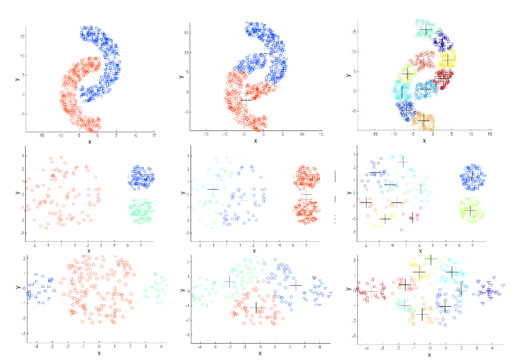
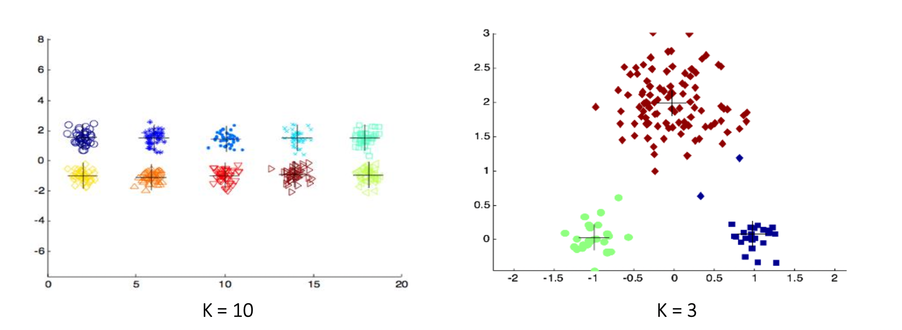

4 Resumen de Cluster

4.1 Objetivos
Encontrar algorítmicamente grupos de entidades tales que: 1. La similitud intragrupo es alta 2. La similitud entre grupos es baja
Las medidas de distancia y similitud son cruciales en este proceso
4.2 Criterios para agrupar
Existen varias nociones de clusters basados en:
Distancias: Cada punto está más cerca de todos los puntos de su grupo que cualquier punto de otro grupo.
Centroide: Cada punto está más cerca del centro de su grupo que del centro de cualquier otro grupo.
Contigüidad: Cada punto está más cerca de al menos un punto de su grupo que cualquier punto de otro grupo.
Densidad: Los clusters son regiones de alta densidad separadas por regiones de baja densidad.
4.3 Preprocesamiento
Los valores atípicos afectan el desempeño de la mayoría de los modelos.
La escala de los datos también puede jugar en contra.
Por lo tanto, es necesario pre procesar los datos:
- Normalizar los datos (Distribución normal estandar media 0 y desviación estandar 1)
\frac{x-\bar{x}}{\sigma} \frac{x-\bar{x}}{max(x)-min(x)}
\frac{x-min(x)}{max(x)-min(x)} * Lidiar con valores atípicos
Alternativas:
Sacarlos de los modelos o se le puede asignar un cluster
Algoritmos de clustering que admitan outliers, de los que vimos cluster difusos (probabilidad) en especifico puede ser DB-SCAN que trabaja por densidad
4.4 Post procesamiento
Algunos problemas se pueden resolver a través de fusión y división de clusters. Métodos tradicionales generan clústeres esféricos.
La fusión de clústeres mas pequeños podría mitigar este problema. División de clústeres mas dispersos también mejora el desempeño

4.5 Evaluación de clusters
- Estadístico de Hopkins {
- Inspección visual
- Coeficiente de correlación
- Coeficiente de cohesión
- Coeficiente de separación
- Coeficiente de silueta
4.5.1 Estadístico de Hopkins
Antes de agrupar un conjunto de datos, podemos probar si realmente hay clústeres. Necesitamos probar la hipótesis de la existencia de patrones en los datos contra un conjunto de datos distribuidos uniformemente (distribución homogénea).
- Evalúa la tendencia de los cluster
- Mide si un conjunto de datos contiene cluster naturales
- Utiliza un test estadístico para la aleatoridad espacial
La estadística de Hopkins se calcula de la siguiente manera:
- Muestrea p puntos a partir del conjunto de datos
- Generar p puntos aleatorios en el mismo espacio
- Calcula H, donde:
- w_i: distancia desde el punto aleatorio i hasta el vecino más cercano en los datos originales
- u_i: distancia desde el punto de muestra i hasta el vecino más cercano en los datos originales

Los valores de H cercanos a 0,5 indican datos aleatorios, a 1 indica datos altamente agrupados y a 0 indica una distribución uniforme.

4.5.2 Inspección visual
- Crear la matriz de distancia
- Ordene la matriz en función de las etiquetas de clúster obtenidas.
- Inspeccione visualmente
Las buenas agrupaciones exhiben un patrón de bloque claro con “mismo color”

4.5.3 Coeficiente de correlación
- Construir la matriz de similitud inicial entre todos los puntos s(i,j) = 1 / (1+d(i,j))
- Construye la matriz de similitud “ideal” basada en la pertenencia al clúster
- Calcule la correlación entre la matriz de similitud inicial y la matriz de similitud “ideal” (los ejes X e Y son la similitud inicial/ideal respectivamente).
- La alta correlación indica que los puntos del mismo clúster están cerca el uno del otro
4.5.4 Coeficiente de cohesión
Mide cuán estrechamente relacionados están los objetos dentro de cada clúster.
Suma de errores cuadrados (SSE) es la suma de la distancia cuadrada de un punto al centroide de su clúster.
4.5.5 Coeficiente de separación
Mide cuán distinto es un clúster de los otros clusters.
La suma de cuadrados intra grupo (SSB) es la suma de la distancia cuadrada de un centroide de clúster a la media general. Minimizar la cohesión equivale a maximizar la separación.
4.5.6 Coeficiente de silueta
Combina cohesión y separación. Normalmente varía entre -1 y 1, donde
- Valores cercanos a 1 implican una mejor agrupación en clústeres.
- Valor negativo implica que el punto i está más cerca de otro clúster
Para un punto individual i:
- Calcular a_i como la distancia media de i a puntos en el mismo clúster
- Calcule b_{ij} como la distancia media del punto i a todos los puntos del clúster j.
- Calcular b_i como el b_{ij} mínimo excluyendo el clúster propio.
- El coeficiente de silueta para el punto i es:
S_i =\frac{(b_i-a_i)}{max(a_i,b_i)}
El coeficiente de silueta de un clúster es el promedio de los coeficientes de silueta de los puntos pertenecientes.
4.6 Métodos de Clusterización
4.6.1 Basados en Particiones

4.6.1.1 K-medias
Uno de los algoritmos de clusters más simples.
Dado un número K de clusters (determinado por el usuario), cada cluster está asociado con un centroide y cada entidad se asigna al cluster con el centroide más cercano.
Variantes como K-medioides, o K-modas usan otros estadísticos como centroides

4.6.1.2 Métodos jerárquicos
Las entidades se agrupan en una jerarquía de clústeres anidados.
Los métodos jerárquicos se subdividen en aglomerativos y disociativos. Cada una de estas categorías presenta una gran diversidad de variantes. 1. Los métodos aglomerativos, también conocidos como ascendentes, comienzan el análisis con tantos grupos como individuos haya. A partir de estas unidades iniciales se van formando grupos, de forma ascendente, hasta que al final del proceso todos los casos tratados están englobados en un mismo conglomerado. 2. Los métodos disociativos, también llamados descendentes, constituyen el proceso inverso al anterior. Comienzan con un conglomerado que engloba a todos los casos tratados y, a partir de este grupo inicial, a través de sucesivas divisiones, se van formando grupos cada vez más pequeños. Al final del proceso se tienen tantas agrupaciones como casos han sido tratados.
Algoritmo
El algoritmo básico para clustering aglomerativo es sencillo:
- Deje que cada punto de datos sea un clúster
- Calcular la matriz de proximidad (matriz de distancia entre cada clúster)
- Repetir hasta que sólo quede un solo clúster
- Fusionar los dos clústeres más cercanos
- Actualizar la matriz de proximidad
El paso clave es el cálculo de la proximidad de dos clústeres
Diferentes enfoques para definir la distancia entre clústeres distinguen los diferentes algoritmos
Dendrogramas
Un dendrograma es una estructura de tipo árbol que muestra el proceso generativo de agrupación en clústeres. El eje X muestra los puntos de datos originales, mientras que el eje Y podría mostrar la distancia entre clústeres.
Métodos de Aglomeración
A continuación vamos a presentar algunas de las estrategias que pueden ser empleadas a la hora de unir los clusters en las diversas etapas o niveles de un procedimiento jerárquico. Ninguno de estos procedimientos proporciona una solución óptima para todos los problemas que se pueden plantear, ya que es posible llegar a distintos resultados según el método elegido.
- Single linkage:
-
Esta estrategia recibe en la literatura anglosajona el nombre de amalgamamiento simple (single linkage). En este método se considera que la distancia o similitud entre dos clusters viene dada, respectivamente, por la mínima distancia (o máxima similitud) entre sus componentes.
- Complete linkage:
-
En este método, también conocido como el procedimiento de amalgamamiento completo (complete linkage), se considera que la distancia o similitud entre dos clusters hay que medirla atendiendo a sus elementos más dispares, o sea, la distancia o similitud entre clusters viene dada, respectivamente, por la máxima distancia (o mínima similitud) entre sus componentes.
- Average linkage:
-
En esta estrategia la distancia, o similitud, del cluster C_i con el C_j se obtiene como la media aritmética entre la distancia, o similitud, de las componentes de dichos clusters.
Desventajas
- El algoritmo es demasiado caro O(n3): Hay n pasos, para unir clústeres, y en cada paso calculamos la matriz de proximidad O(n2).
- Una vez que se toma la decisión de combinar dos grupos, no se puede revertir
- Ninguna función objetivo se minimiza directamente
4.6.2 Clusters difusos
Cada punto tiene un probabilidad de pertenecer a cada clúster.
4.6.2.1 Coeficiente de partición difusa (FPC)
El coeficiente de partición difuso evalúa la variabilidad de las asignaciones.
F(U)= \frac{tr(U*U^T)}{n}
Donde U es la matriz de pertenencia, * es el operador de multiplicación entre matrices, y tr( ) es la traza de la matriz, es decir, la suma de los valores diagonales.
El coeficiente de partición difusa varía entre 0 y 1 donde un valor cercano a 1 implica menor variabilidad en la matriz de pertenencia, que se asocia a una mejor clusterización de los datos.
4.6.2.2 Gaussian Mixed Models
Un modelo de mezcla gaussiana (GMM) asume que los datos se generaron a partir de una mezcla de K gaussianos multidimensionales, donde cada componente tiene parámetros: N_k(\mu_k,\Sigma_k)
- K es definido por el usuario.*
Gaussiono Multivariado
Algoritmo